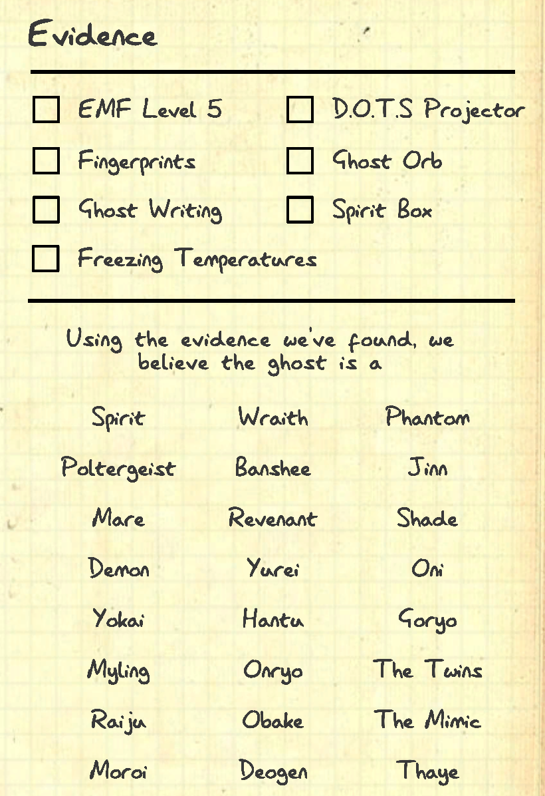
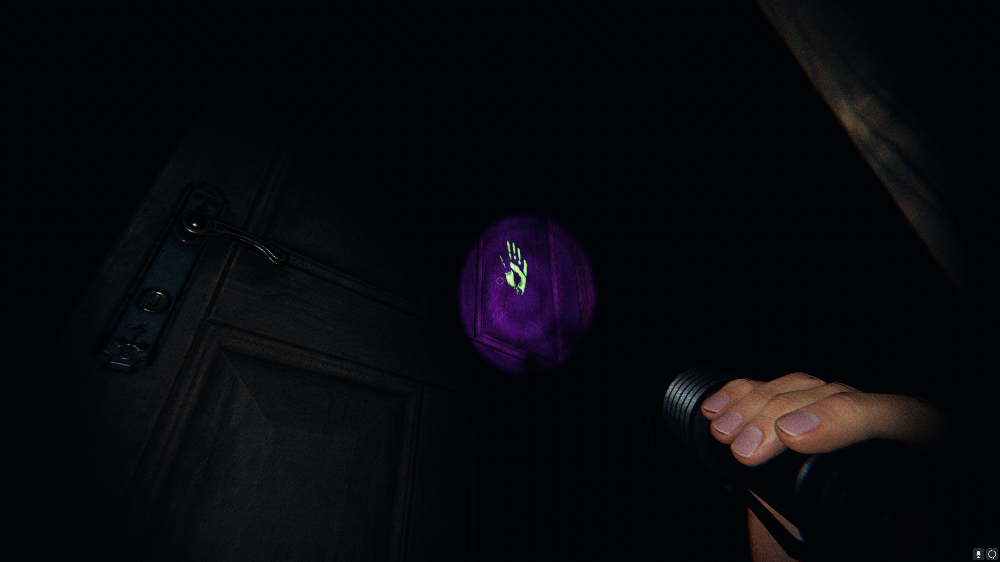
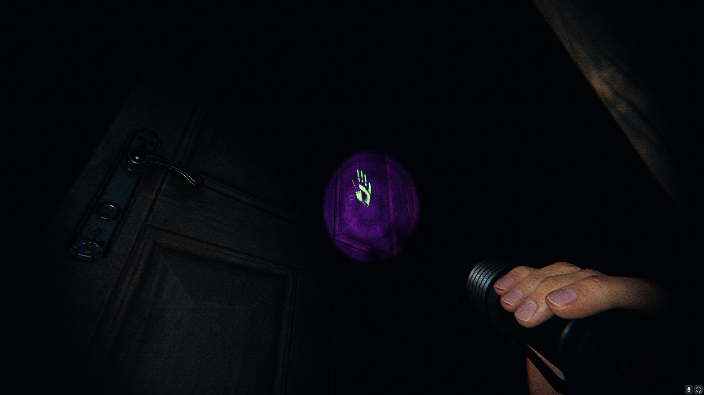

Equipments
What is the use of Equipments?
Equipments are used for 2 purposes:
1. Identify the type of Ghost Haunting the area.
2. Complete Objectives
How to identify a ghost?
Unless you are playing Nightmare or Custom difficulty,
each Ghost you encounter will have at least 3 evidence to identify the Ghost.
You can use the Journal in game by pressing J to acces the evidence page
and use the process of elimination to identify the ghost by cancelling, marking
evidence found and not found.


What are the different type of equipments?
1. Equipments to find Ghost type
2. Equipments to complete Objectives.
This can be seen divided into two section in the starting Van
and Lobby Menu.


 >
>


 
